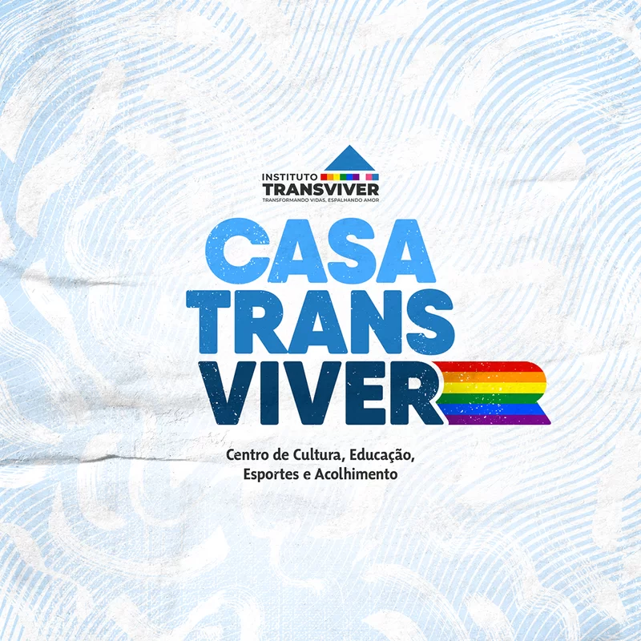

TransViver
instituto em Pernambuco de acolhimento a comunidade LGBTQI+
Atualmente o trabalho realizado pelo Instituo Transviver, de Recife, se torna ainda mais necessário, vital e essencial. O grupo que nasceu de um encontro de pessoas trans com a idealizadora do Instituto, Regina Guimarães, hoje recebe doações para serem encaminhadas à nossa população. Ainda mais vulnerabilizada pela paralisação das atividades econômicas.
Conheça um pouco da nossa história.
O Instituto Transviver é uma organização não-governamental, sem fins lucrativos, que promove o empoderamento da população LGBTQI+ e luta pelo respeito à diversidade humana Nossa missão é acolher a população LGBTQI+ em situação de vulnerabilidade social, criando condições de empoderamento e de protagonismo para o exercício da cidadania plena. Regina Guimarães pensou e viabilizou uma articulação com um grupo de psicólogas que disponibilizava uma vez por semana uma terapia em grupo, onde era fornecido também um lanche e o valor das passagens de ida e volta de ônibus para quem participava. Atualmente, o instituto tem iniciativas que abraçam toda a população LGBTI+:
- Time de futsal formado apenas por homens trans (Recife, Caruaru e Salvador);
- Curso Preparatório para Supletivo para pessoas LGBTI+;
- Curso de inglês para pessoas LGBTI+ (Parceria com a UNINABUCO);
- Demandas espontâneas tais como: encaminhamento para serviços de saúde, junto com as coordenadorias de Saúde LGBT municipais e estaduais; retificação de Registro de Nascimento, junto com a Defensoria Pública e demais apoios psicossociais.
Como doar?
Para contribuir, você pode efetuar um depósito ou transferência bancária de qualquer valor para a conta do Banco Itaú, AG: 2483, Conta Corrente: 0026325-3, CNPJ: 32.275.491/0001-55. Ou, caso prefira, pode nos procurar via direct, no Instagram @transviver, para combinar a entrega de doações físicas.
Conheça os desenvolvedores do site
Clicando aqui falamos mais sobre o projeto e quem somos. E dentro desse termo deixamos nossos contatos e localização.